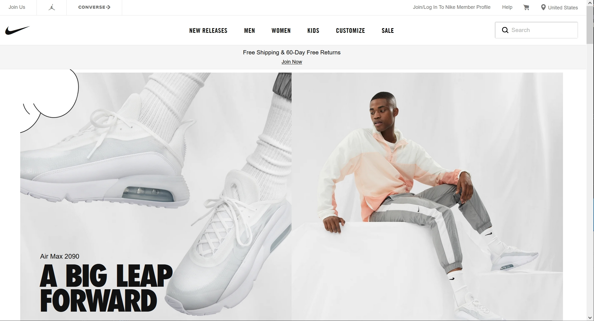
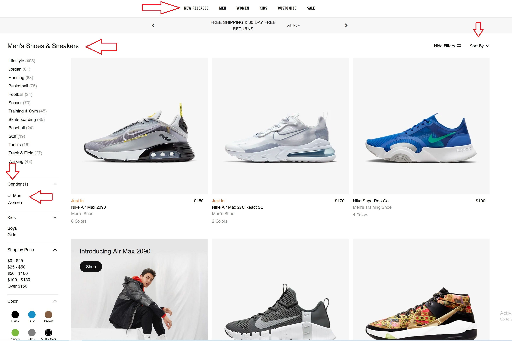
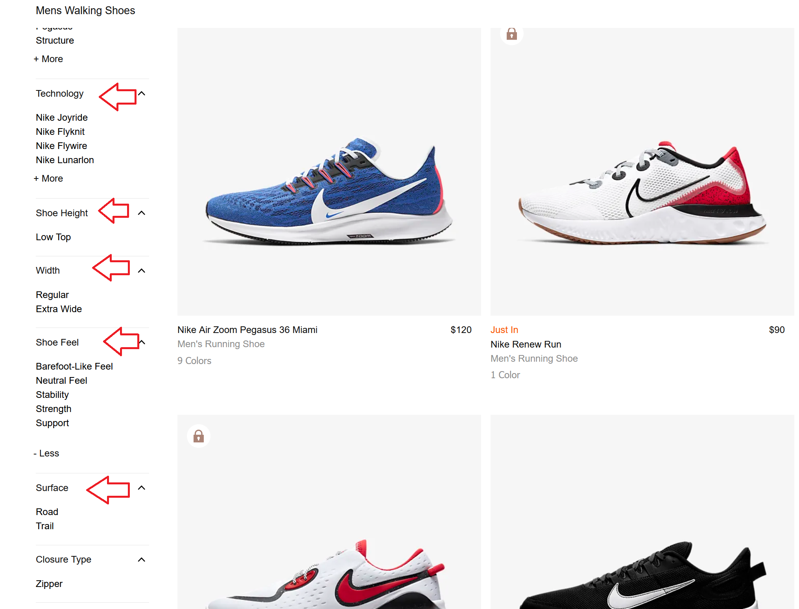
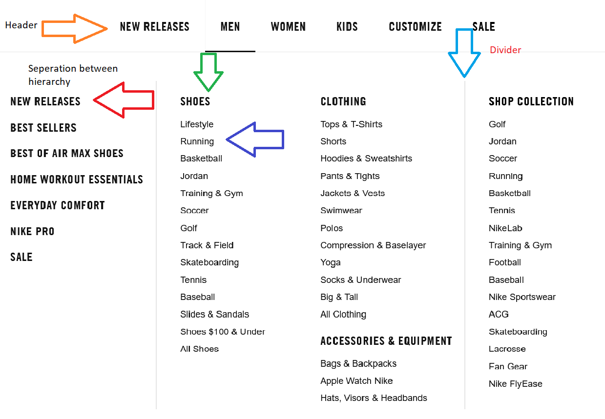
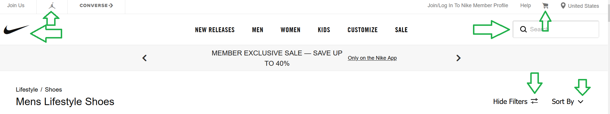
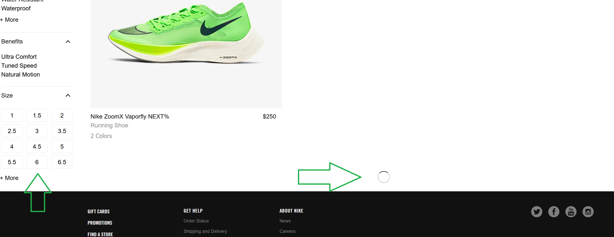
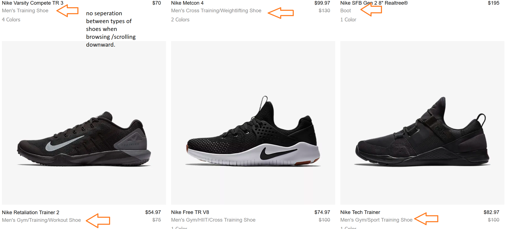

Nike Usable Design Analysis
- Basis of this site is an - Ecommerce Website.
Criteria
- Are navigational elements clear?
- Is content presented with clear hierarchies?
- Do I know what I'm looking at on each page?
- Can I see there is more content if I scroll down?
Criteria 1 - Navigation
-- Working for site --
-From top to bottom and left to right navigating through the options is very simplistic, items are clearly labeled and texts are weighted and have proper headers to display differences
-- Could be improved --
when you select "mens" then "shoes" > "life style" and look at the bread crumb, AFTER you click on the "shoes" in the breadcrumb it is a little misleading. the link does not bring you back under the "mens" category. which could be resolved by just including "mens" in the breadcrumb
Criteria 2 - Hierarchies
-- Working for site --
-Each section is organized with a header and sub categories that do no overlap into the next, followed by dividers to help keep organization
-- Could be improved --
Basically there is just a bit of spacing to display the difference in heirarchy between the categories and it can get a little muddled. The simple solution like with their drop down categories is to give better weight to the text and maybe shift the text a little.
Criteria 3 - Icons / Symbols
-- Working for site --
-there are recognizable icons for shoping kart and drop down menus and magnifying glass to make things a bit easier to navigate mindlessly There is even a "customize" icon that allows users to delve further in creativity.
-- Could be improved --
I don't have one, sometimes less is better.
Criteria 4 - Scrolling Down
-- Working for site --
-As you scroll down, the page loads a certain amount so it does not slow your computer down and the categoreies on the left reload and follow you downward incase you decide you want to jump somewhere else instead of Scrolling all the way back up.
-- Could be improved --
When scrolling through shoes there is no divider between each category of shoe as it jumps to next avaliable shoe. The dividers that they had in the drop down could be used to section off each category when scrolling down